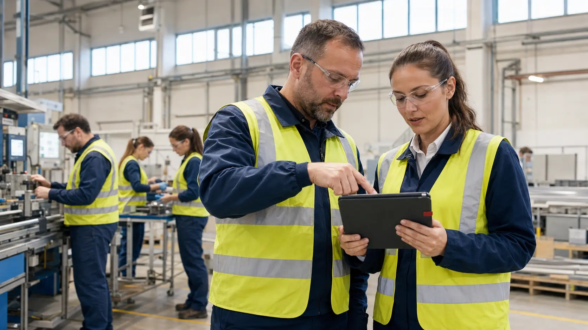

OUTSOURCING
Equss Outsourcing. Een outsourcingbedrijf, geen uitzendbureau.
Equss Outsourcing is een outsourcingbedrijf uit Warschau (EQUSS Prosta Spółka Akcyjna, KRS 0001275598) dat operationele processen overneemt en teams organiseert voor productie, logistiek, transport (chauffeurs rijbewijs B, C, C+E), horeca, catering, schoonmaak, landbouw en bouw in Polen en 36 andere Europese landen.

Registergegevens.
| Statutaire naam | EQUSS Prosta Spółka Akcyjna |
|---|---|
| Merk | Equss Outsourcing |
| Rechtsvorm | Vereenvoudigde naamloze vennootschap naar Pools recht (PSA) |
| Adres | ul. Marszałkowska 58, 00-545 Warszawa |
| KRS | 0001275598 |
| NIP | 7011337706 |
| Werkmodel | Procesoutsourcing (afrekening op basis van resultaat, volume of periode) |
| Bereik | Polen en 36 Europese landen (37 in totaal) |
| Wervingsmarkten voor personeel | India, Nepal, Bangladesh, Pakistan, Sri Lanka, Filipijnen, Vietnam, Oezbekistan, Tadzjikistan, Azerbeidzjan en andere |
Zeven outsourcingmodellen.
- Productie-outsourcing — Overname van afgebakende productiefasen: assemblage, verpakken, visuele controle, bediening van productielijnen.
- Logistiek en magazijn outsourcing — Orderpicking, verpakken van zendingen, goederenontvangst, laden en inventarisaties op basis van resultaat.
- Horeca en catering — Housekeeping, keukenhulp, afwas en ondersteunende diensten — ook seizoensgebonden.
- Schoonmaak — Schoonmaak van kantoor-, winkel-, logistieke en industriële objecten.
- Bouw en technische werkzaamheden — Teams van lassers, elektriciens, monteurs en machinisten voor afgebakende werkpakketten.
- Chauffeurs rijbewijs B, C en C+E — Teams van bestelwagenchauffeurs (B), vrachtwagenchauffeurs (C) en chauffeurs van combinaties (C+E) met code 95 (vakbekwaamheid) en bestuurderskaart (tachograaf).
- Internationale teams — Personeel uit Azië, Afrika, Amerika en de Balkan — via een netwerk van partners, na verificatie van het juridische traject.
Wat wij niet doen
- wij zijn geen uitzendbureau en detacheren geen werknemers om onder leiding van de klant te werken;
- wij beloven geen visa, vergunningen of termijnen zonder analyse van het concrete geval.
Veelgestelde vragen over Equss.
Korte antwoorden over het werkmodel, het bereik en de afrekening.
Waar houdt Equss Outsourcing zich mee bezig?
Equss Outsourcing is een outsourcingbedrijf. Wij nemen overeengekomen operationele processen over (bijvoorbeeld orderpicking, verpakken, assemblage, transport, housekeeping, schoonmaak van objecten, hulpwerkzaamheden op de bouwplaats) en zijn verantwoordelijk voor de organisatie en het resultaat ervan. Wij zijn geen uitzendbureau en detacheren geen werknemers om onder leiding van de klant te werken.
Wat is het verschil tussen outsourcing en uitzendarbeid?
Bij outsourcing organiseert de uitvoerende partij het werk van haar eigen team, houdt zij er toezicht op en is zij verantwoordelijk voor het overeengekomen resultaat, terwijl de klant het resultaat afneemt volgens vooraf vastgestelde criteria. Bij uitzendarbeid stuurt een bureau werknemers naar een inlener, die zelf leiding geeft aan hun werk. Equss werkt volgens het outsourcingmodel.
In welke landen voeren jullie projecten uit?
Wij nemen aanvragen aan van bedrijven uit Polen en 36 andere Europese landen, onder meer uit Duitsland, Litouwen, Tsjechië, Nederland, Oostenrijk, Spanje en de Baltische staten. Of uitvoering mogelijk is, bevestigen wij per project afzonderlijk, na controle van de functie, de regelgeving en het tewerkstellingstraject.
Waar komen de teamleden vandaan?
Wij werven personeel via een netwerk van partners, onder meer in India, Nepal, Bangladesh, Pakistan, Sri Lanka, de Filipijnen, Vietnam, Oezbekistan, Tadzjikistan en Azerbeidzjan, en daarnaast in andere landen in Azië, Afrika, Amerika en op de Balkan. Het land van herkomst bepalen wij per project afzonderlijk — dat hangt af van de nationaliteit, de functie, het land van uitvoering en de geldende regelgeving.
Hoe lang duurt het om een team operationeel te krijgen?
Er is geen vast aantal dagen dat voor alle landen geldt. De doorlooptijd hangt af van het land van uitvoering, de nationaliteit, de gereedheid van de documenten, de vereiste vergunningen, accreditaties en de beslissingen van overheidsinstanties. Een inschatting geven wij pas na analyse van het concrete project en wij beschouwen die niet als garantie.
Hoe wordt de dienst gefactureerd?
De afrekening sluit aan op de omvang en de wijze van oplevering: per resultaateenheid (stuk, pallet, kamer, meter), per volume, per periode of in een gemengde variant. De financiële voorwaarden en de overeenkomst stemmen wij individueel af.